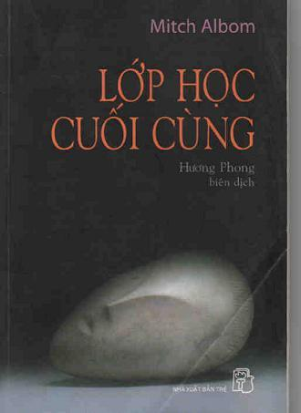

Trong những ngày tháng cuối cùng trên giường bệnh, thay vì bất lực nhìn tử thần cứ dần dà gậm nhấm từng mẩu thân thể của mình, thầy Morrie đã trăn trở tự vấn: “Ta cứ héo hắt biến mất khỏi thế gian này hay cố gắng biến quãng đời còn lại thành thời gian đẹp nhất của cuộc sống?” để rồi đi đến một quyết định quan trọng, rằng: “Thầy sẽ biến mình thành quyển sách giáo khoa sống để mọi người khác đọc”, rằng “Thầy muốn bước qua cây cầu cuối cùng nối giữa sự sống và cái chết. Đi qua và thuật lại cho hậu thế”. Và thế là buổi tái ngộ sau nhiều năm xa cách trở thành buổi đầu tiên của khóa học cuối cùng - một thầy một trò - ngay bên giường bệnh.
…
Lẫn trong nỗi tiếc nhớ vô hạn, là niềm tin tự hào không che giấu của Mitch về người thầy của mình: có bao giờ bạn thực sự có một người thầy? Một người trân trọng bạn như viên ngọc quý chưa được mài giũa, một thứ trang sức mà có thể lấy trí tuệ chà cho sáng bóng lên...
Lớp học cuối cùng của thầy Morrie đã kết thúc bởi đời người không thể vượt qua cái hữu hạn, nhưng hình ảnh một Người Thầy với tất cả ý nghĩa cao đẹp của nó cùng những bài học về nhân sinh thì vẫn mãi mãi bất tử.
Trước Khi Vào Truyện
Có những khoảnh khắc bất ngờ, những sự việc ngẫu nhiên lại có ảnh hưởng sâu sắc, làm đảo lộn cả nếp sống và thay đổi những sắp đặt của đời người.
“Lớp học cuối cùng” ra đời từ cái khoảnh khắc tình cờ ấy, nói cho đúng ra, đó là sự tiếp nối của lớp học đầu tiên thời sinh viên: Gần hai thập kỷ trước, khi còn ngồi trên ghế nhà trường, Mitch Albom từng là học trò cưng của tiến sĩ xã hội học Morrie Schuwartz, một giáo sư giàu uy tín và kinh nghiệm giảng dạy, một người bạn lớn, nhiệt tình và có sức thu hút đối với sinh viên, được họ trìu mến đặt cho biệt danh “Coach” - Huấn luyện viên.
Mối quan hệ thầy trò khắng khít tưởng chừng thâm giao ấy bỗng dưng bị gián đoạn sau lễ tốt nghiệp của Mitch, bởi chàng trai trẻ ấp ủ quá nhiều dự định đã lao ngay vào guồng quay hối hả của xã hội ngõ hầu chạy đua với thời gian trên con đường tự khẳng định mình, và lời hẹn với thầy ngày tốt nghiệp đã nhanh chóng rơi vào lãng quên, như anh tự bạch: “Tôi đã đánh đổi nhiều giấc mơ thời thanh niên để nhận lại hàng đống tiền”!
Cho đến cái khoảnh khắc tình cờ nọ...
Đó là cái tích tắc nhà báo thời danh Mitch Albom tiện tay bật TV, và tiết mục truyền hình "Câu chuyện hàng đêm” đã khiến anh rúng động toàn thân khi gặp lại người thầy cũ: Chàng “thanh niên râu” linh hoạt và vui nhộn, người tưởng chừng không có tuổi, người từng sáng chói trên sàn nhảy tự do năm xưa với vũ điệu độc đáo của riêng mình, giờ đây đã trở thành một ông lão tàn phế bị cột chặt trên xe lăn với bản án tử hình đã được phán quyết - Căn bệnh nan y ALS, đang phá hủy hệ thần kinh, đẩy ông dần đến cái chết.
Trong những ngày tháng cuối cùng trên giường bệnh, thay vì bất lực nhìn tử thần cứ dần dà gậm nhấm từng mẩu thân thể của mình, thầy Morrie đã trăn trở tự vấn: “Ta cứ héo hắt biến mất khỏi thế gian này hay cố gắng biến quãng đời còn lại thành thời gian đẹp nhất của cuộc sống” để rồi đi đến một quyết định quan trọng, rằng “Thầy sẽ biến mình thành quyển sách giáo khoa sống để người khác đọc”, rằng “Thầy muốn bước qua cây cầu cuối cùng nối giữa sự sống và cái chết. Đi qua và thuật lại cho hậu thế”. Và thế là buổi tái ngộ sau nhiều năm xa cách trở thành buổi đầu tiên của khóa học cuối cùng - một thầy một trò - ngay bên giường bệnh.
Hầu như toàn bộ những vấn đề có ý nghĩa nhất của cuộc sống đã được đặt ra trong 13 tuần ngắn ngủi ấy: tình yêu, công việc, gia đình, cộng đồng, cái chết... không có giáo trình hay tài liệu tham khảo, chỉ là những lời tâm tình, gợi ý và chiêm nghiệm, là sự chứng kiến của học trò trước cái cách ung dung và dũng cảm đương đầu với bệnh tật của người thầy. Không có kì tốt nghiệp, bởi vì đó là ngày vĩnh biệt người thầy. Nhưng còn lại đây “khóa luận” kết thúc lớp học, đó chính là những trang sách bạn đọc sắp thưởng thức, một công trình được sự gợi ý và bàn bạc của thầy Morrie, một “đề án của chúng ta” - như cách ủy thác của vị giáo sư quá cố.
Lẫn trong nỗi tiếc nhớ vô hạn, là niềm tự hào không che giấu của Mitch về người thầy của mình: “Có bao giờ bạn thực sự có một người Thầy? Một người trân trọng bạn như viên ngọc quý chưa được mài giũa, một thứ trang sức mà có thể lấy trí tuệ chà cho sáng bóng lên…”
Lớp học cuối cùng của thầy Morrie đã kết thúc bởi đời người không thể vượt qua các hữu hạn, nhưng hình ảnh một Người Thầy với tất cả ý nghĩa cao đẹp của nó cùng những bài học về nhân sinh thì vẫn mãi mãi bất tử.
Xin trân trọng giới thiệu cùng bạn đọc.
NHÀ XUẤT BẢN TRẺ